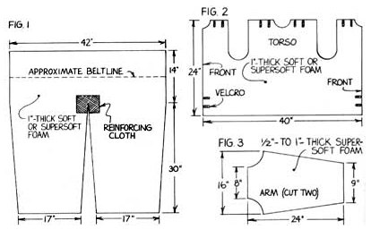
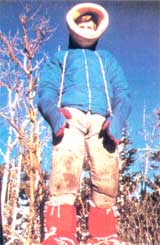
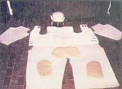
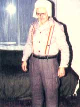
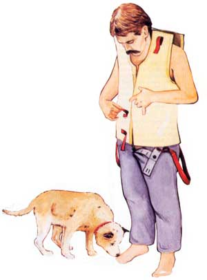

If you love the feel of winter wind on your cheeks but don't want to spend your last cold dime...
When most of us think of a winter vacation, we dream of sunny tropical islands with white sand and gentle breakers. When Jim Philips headed off on his snow season voyage, though, he went several hundred miles above the Arctic Circle ... to a deserted place on the frozen ice north of Point Barrow, Alaska.
To make this "dream trip" more unusual, Jim Philips didn't dress in the latest cold-weather wear from L.L. Bean or Eddie Bauer. Instead, he and his father wore winter clothing (and even used sleeping systems and mukluks) that they developed and made for under $100!
The pair started to design their own clothing when Jim was a boy. "When I was in Boy Scouts," Jim says, "I could barely afford what was offered on the market for winter camping. Then, when I did spend a lot of money on something that was supposed to be 'winterproof' and it didn't do the job, I was so disappointed that I decided to make some gear myself."
Jim adds that he didn't just get out of bed one day and decide to go camping on the polar ice cap. In fact, that expedition was the ultimate challenge after years of testing. Previously, Jim and his father had camped in subzero temperatures at 13,000 feet in the Colorado Rockies and in blizzards on the infamous Mount Washington in New Hampshire, to name a couple of chilly spots.
I asked Jim how he could stay warm without the standard equipment that seems so essential to winter survival. Immediately he corrected me. "Survival," he said, "is the wrong word. I prefer to use the word living in reference to arctic conditions. A person can survive but be uncomfortable, perhaps get frostbitten and lose limbs. That's not good enough for me. You should be able to stay warm and not suffer adverse effects. The clothes I've developed aren't fancy, but they work because they insulate, they breathe, and they're practical."
Making cozy-in-the-cold clothing like Jim's is both easy and inexpensive. You need no special tools or sewing skills for the job. Just gather up a 4' X 8' piece of 1" supersoft polyurethane plastic foam (foam rubber and other substitutes will not work), a very large shirt and pair of pants, a sharp knife, a supply of Velcro strips, and an aerosol can of urethane glue.
One-inch foam can be purchased from an upholstery supply store for about 30 cents a linear foot. This is the ideal thickness for living and working in subzero temperatures and is recommended for the pants and torso sections of your clothing. You can use thinner foam, 5/8" or 3/4", for the arms.
Be sure that the shirt and pants are at least four or five sizes larger than you normally wear and made of a fabric, such as double-knit polyester, that doesn't absorb water.
Using Fig. 1 as a rough guide, cut the pants from a single piece of large foam with a sharp knife (a dull blade grabs and pulls the foam). Use long sweeping motions to make clean, smooth cuts; cut the foam bigger than necessary, then trim to fit your needs. The belt-line should be 6" larger than the normal size. (The drawing gives the measurements for a man with a 36" waist.) No matter what size legs you have, cut the foam legs 17" wide. A little creative customizing will probably be necessary to see that the foam fits both the pant and your leg.
You will also need to sew or glue a patch of reinforcing cloth-about 6 inches square-at the crotch to prevent tearing. (The top of the crotch should be in the center of the patch.) A glue specifically made for urethane foam can be purchased from the upholstery supply, or you can use 3M Fast Tack Trim Adhesive, found in auto parts stores.
To put the parts together, simply roll up the foam legs and insert them inside the pant legs. With both foam legs in, you will have a pair of pants that will almost stand by themselves!
The shirt of this Eskimo-like outfit consists of the torso and the arms, all held in place by Velcro strips. (Velcro is usually sold by the foot at camping stores.) These can be glued on with the urethane glue at the abdomen and on each shoulder. The torso size shown in Fig. 2 should fit most adults, but as with the pants, you'll probably need to modify it some to fit your individual frame.
After you cut out the arms (see Fig. 3), roll them up and put them inside the sleeves of the shirt. Then wrap the foam torso around you and hook the Velcro strips that hold the torso piece in place. Now put the shirt on, and you're ready to go!
For best results, the foam should be worn right next to your skin. Also, you may want to use suspenders to help keep the pants up.
If you have foam left over, make bun and knee pads. These are slipped in between the pants and the foam liner to give added warmth, in case you do any kneeling or sitting on the snow.
To keep your feet frostbite-free, Jim recommends using an old pair of Moon Boots or waders. Cut off the uppers, leaving only the soles, then sew on a cloth upper and wrap your feet in foam. Without socks you can be warm in weather as cold as 60° below-right down to your toes. Jim has used the same foam and a nylon shell to make mittens and even an arctic parka (which he made from an old Penny's jacket he bought at a garage sale for $2.00).
So, as you can see, with these simple materials you can make everything you need in order to live comfortably at extremely cold temperatures. All that padding may make you look like an overstuffed Santa ... but you'll be a warm one!…
EDITOR'S NOTE: The folks here at MOTHER have not had a chance to try these clothes (at this writing, we're still waiting for our first frost!), so we recommend that you test them yourself on short outings before venturing out on a full winter expedition.
Jim Philips runs a school that teaches arctic living, winter camping, and cold-weather survival firsthand. For information about upcoming expeditions, write him at Without Fire or Shelter, 940 N. Sage Dr., Pleasant Grove, UT 84062.
|
 Jim is ready to face any chilling weather in this outfit complete with mukluks, foam-filled mittens, and inexpensive foam-lined parka. |
 Jim's dad models his winter clothing before heading outdoors. |
 Cut foam pieces laid out and ready to be assembled. |
|
 |
 |
|